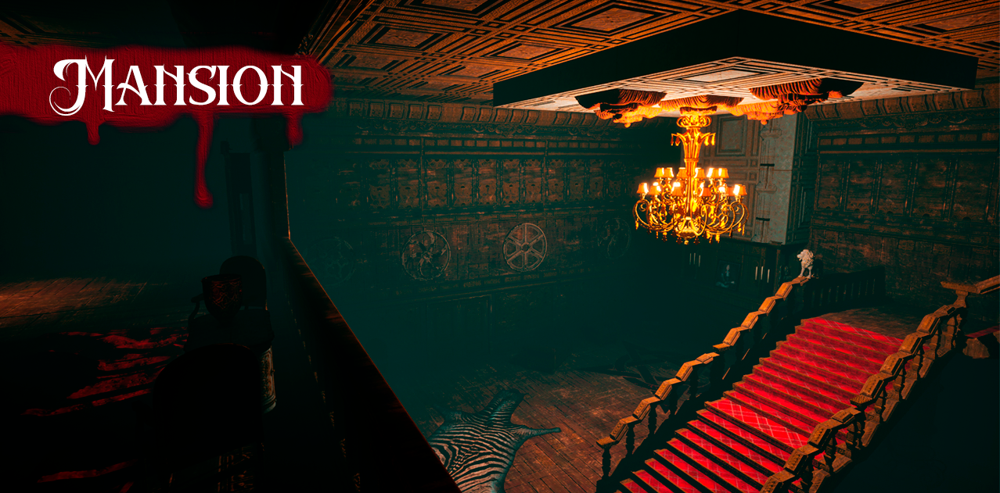

Mansion
 Download the GameOverview
Mansion is a puzzle level that takes place in a household. This level has a low skill requirments and is approchable for begginers.
Genre: Puzzle
Platform: Windows PC
Engine: Unreal Engine 5
Tools Used: UE5, Photoshop, Google Documents
Team Size: 1
Role: Concept, Blockout, Route-Framing, Scripting
Goals and restrictions
My goals with this project were to:
- Create a level that encompasses everything learned in an eu5 course.
- Spend more time practising, refining and perfecting my level design process.
- Learn how to analyze and create a small demo of a bigger game.
- Design and pitch a level that is playable and can be scaled.
I have also set some restrictions on this project to keep the scope and give myself a deadline. The restrictions are:
- Map size must be less than 10 total individual rooms.
- The map must contain at least 3 interactable gimmicks, 2 at least key for completing the level, 1 for further inmersion.
- The overall level should be simple enough for begginer players to not get lost. The level must be easy to understand.
- No AI and no enemies. This would take too long and fall outside the scope of the project size.
First layout of the map, 1st floor and 2nd floor and where the key items are.
Layout
In the first iteration, I tried to recreate a common mansion first, keeping 2 things in mind: first, I wanted the level to be backtrackable, to avoid the level feeling small and linear. Secondly, the main atraction of the puzzle were books, so I had to keep some rooms where bookshelves are normal there. I wanted to fill the level with bookshelves to avoid making it obvious where to look for books, but also putting some of them out of place. With that, I setted on a 2-floor level, with almost equal important things to do in both floors, putting key items (such as the flashlight, needed to travel the level when lights turn off). To make the level backtracking feel natural, I locked the office at first, putting the key to unlock it on the first floor.
See Level Design Document